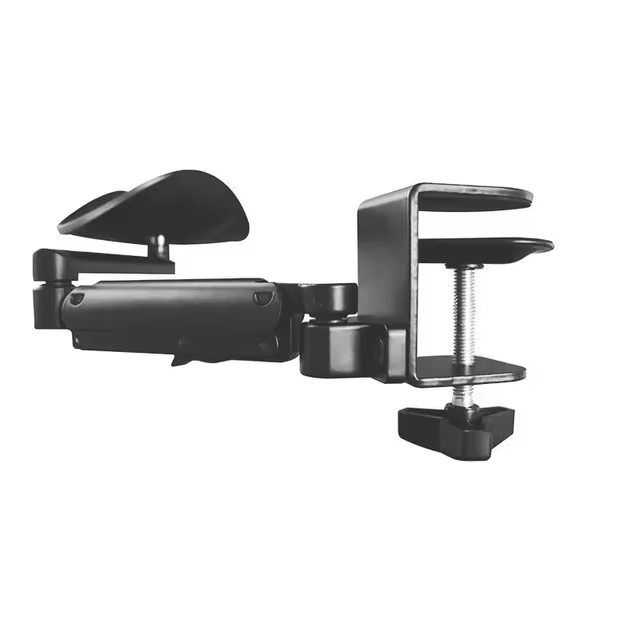

Tablike Drawing Armrest

1. Advanced Ergonomic Computer Arm Rest: SPASEEBA relieving arm support avoids arm overhang, designed to relieve office professionals, gamers, coders from arm discomfort and shoulder pain caused by long hours of work. Meanwhile, the adjustable arm support can be flexibly contracted, easy to organize when not in use and does not occupy your space.
2. 360° Rotatable and 6-Levels Adjustable: This adjustable armrest is extremely flexible, free to rotate 360°, and a bracket can extends up to 13 inches, and 6 levels of height adjustment designed to raise your elbow up to 7cm, which allows to easily adjust the most comfortable angle for you.
3. Sturdy and Durable: The aluminum elbow rest are lightweight and easy to install, and it can fully support the weight of the forearm up to 15 kg, very sturdy and durable. In addition, the desk armrests are covered with thick fabric padding and high-density foam that is super soft and comfortable against your skin.
4. Easy to Install and Use: This desk arm rest has a clip-on mounting and requires no installation parts, just lock the armrest on the edge of the desk with a thickness of up to 2.2 inches and tighten it. The desktop mounting parts are equipped with rubber pads, no need for mounting holes, will not scratch your desk(not compatible with curved desks, beveled edges, desks with drawers, raised edges, rounded table edges).
5. Both for Left/Right Handed Users: SPASEEBA arm support for arm and elbow support and is designed for both right and left-handed users, can use it to make your office easier.